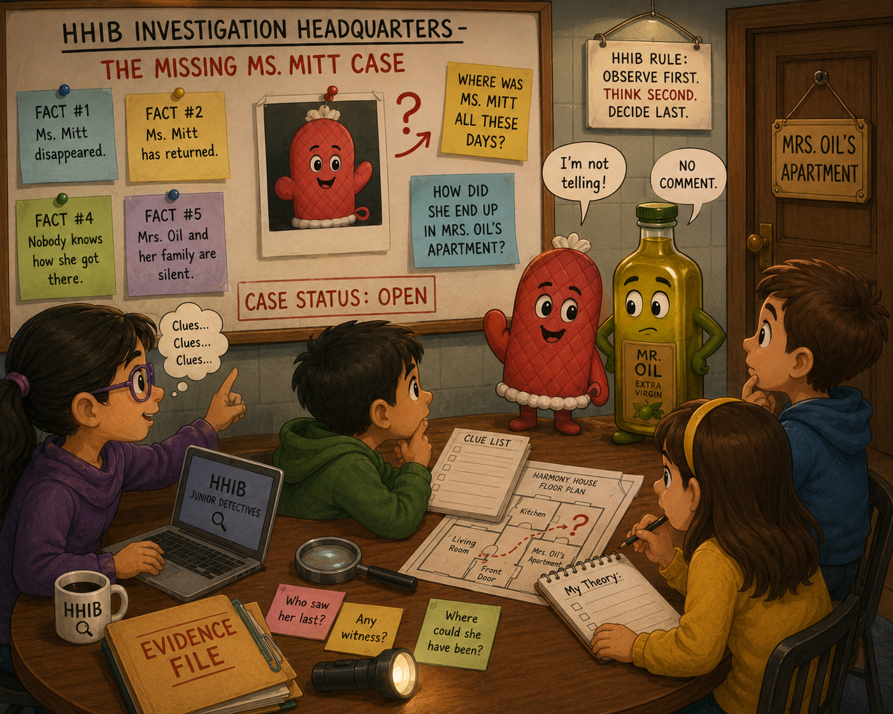

Harmony House Investigation Bureau (HHIB)
Episode 4: Ms. Mitt Is Back — But She Isn’t Talking!
There is BREAKING NEWS at the Harmony House Investigation Bureau.
After being missing for several days, Ms. Mitt is BACK!
That should have closed the case.
It did not.
In fact, the mystery has become even more mysterious.
Ms. Mitt was discovered in a most unexpected place:
Mrs. Oil’s apartment!

Dr. Z stared at the evidence.
“How did Ms. Mitt get into Mrs. Oil’s apartment?”
No answer.
“Where has Ms. Mitt been all this time?”
Silence.
Ms. Mitt is not talking.
Even more suspiciously, Mrs. Oil’s family is also completely silent.
Nobody is explaining anything.
Did Ms. Mitt spend the entire time in Mrs. Oil’s apartment?
Did she arrive there recently?
Did someone move her?
Did she somehow get there by accident?
HHIB does not know.
And a good detective does not invent an answer just because nobody is talking.
Observe first. Think second. Decide last.
So, for now, the facts are simple:
Fact #1: Ms. Mitt disappeared.
Fact #2: Ms. Mitt has returned.
Fact #3: She was found in Mrs. Oil’s apartment.
Fact #4: Nobody knows—or nobody is saying—how she got there.
Fact #5: Mrs. Oil and her family have offered no explanation.
Dr. Z has therefore made an official HHIB announcement:
The Missing Ms. Mitt Case is NOT CLOSED.
Ms. Mitt may no longer be missing, but her whereabouts during the missing days remain unknown.
And there is now another question on the investigation board:
HOW DID MS. MITT END UP IN MRS. OIL’S APARTMENT?
Until somebody talks, HHIB will continue to investigate.
🔎 Junior Detectives — HHIB Needs Your Help!
Ms. Mitt is back, but the mystery is NOT solved.
Where do YOU think Ms. Mitt was all these days?
And here is the bigger mystery:
How did Ms. Mitt end up in Mrs. Oil’s apartment?
Look at the clues. Think carefully. Send HHIB your theory!
Remember the HHIB rule:
Observe first. Think second. Decide last.
HHIB Lesson
Finding a missing object does not always solve a mystery.
Sometimes...
it starts a new one.
Case Status: OPEN
To be continued…